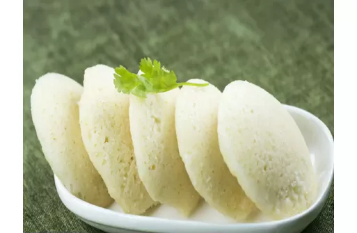

Ingredients
- 1/2 cup Urad Dal (skinned black lentils)
- 2 cups Idli Rava (rice rava or cream of rice)
- 3 tablespoons Poha (aval/rice flakes)
- 1/4 teaspoon (approx. 8-10 seeds)
- Fenugreek Seeds (methi dana)
- 1/2 teaspoon Salt (or to taste)
Directions
- First of all start by washing the rice and dal separately. Now soak them separately as well.
- Now drain the rice and add some water to it, now grind them in a mixer. Do this until it becomes a paste.
- Now start by draining the dal and add some water to it, then start grinding it, keep adding water to make a fine paste. Make sure that rice paste is coarse while the lentil paste is done fine.
- Now mix both the paste and add salt in it. Then keep the batter overnight at a dry place. Batter will become sour overnight.
- The entire process takes 24 hours approximately.
- Start by mixing the batter once. Do this gently, you would not want the air bubbles to go out completely. Then rub some oil on the idli molds.
- Now start dropping batter in each mold accordingly. Then add approximately 1 inch deep water in the idli steamer. Now place the idli stand in the steamer and close it. Then steam it on high for about 5 minutes.
- Then low the steamer and keep it like that for about another 5 minutes. Then open the steamer and check the idli, if it is done, if not then steam it for about 2-3 minutes more.
- Now, take the steamer and take out the idles from each mold. To do that you can either use a knife or a spoon.
- Idlis are best served with chutneys and sambar.